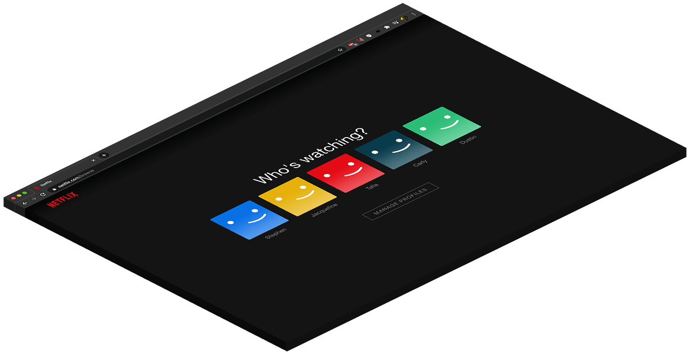
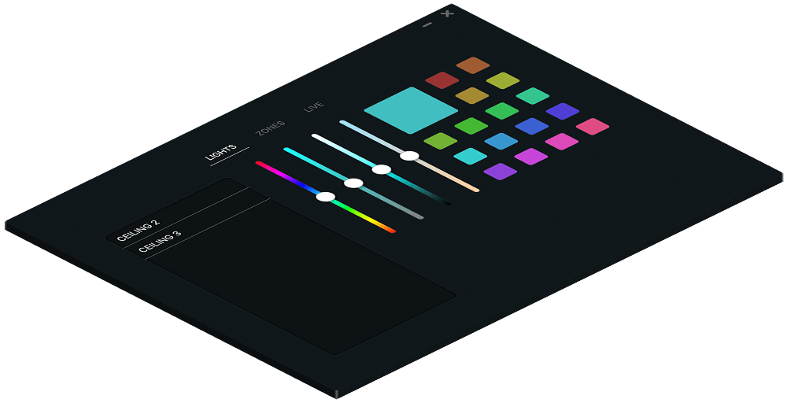
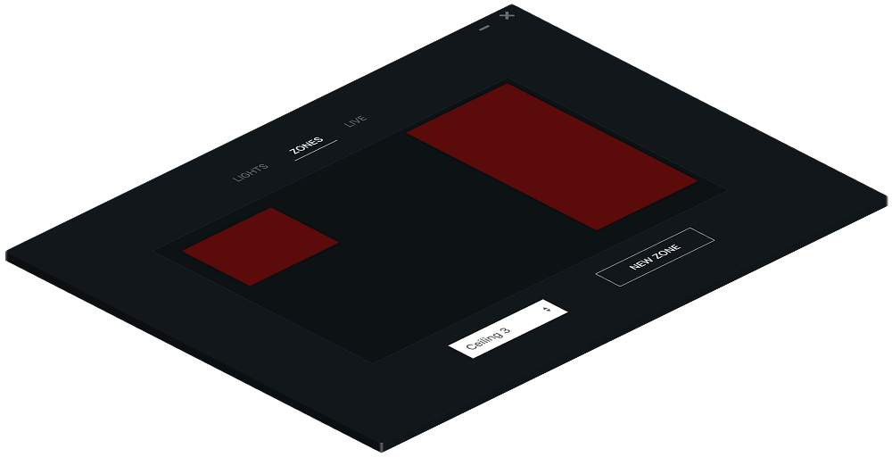
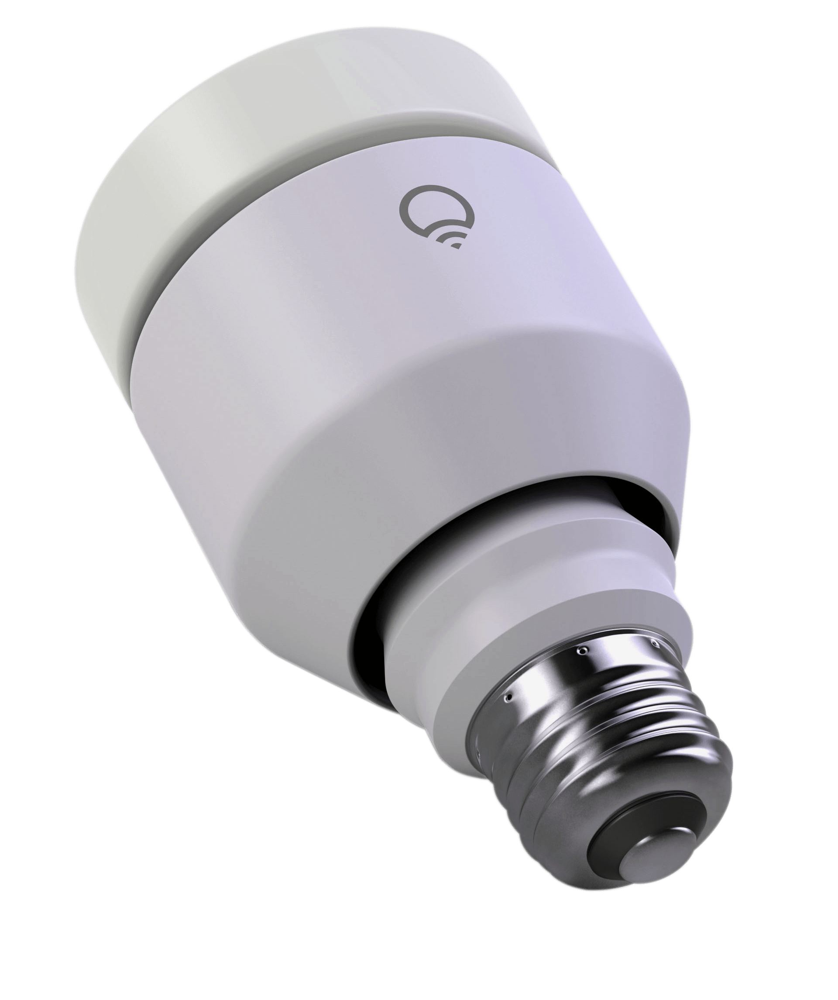
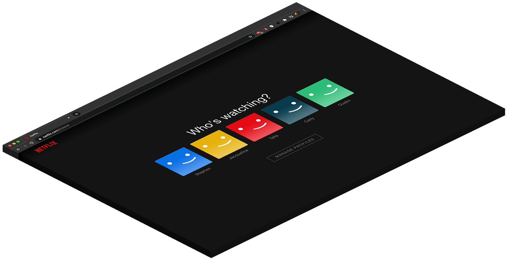
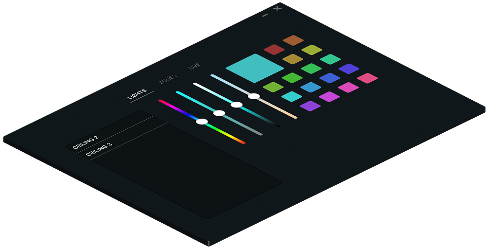
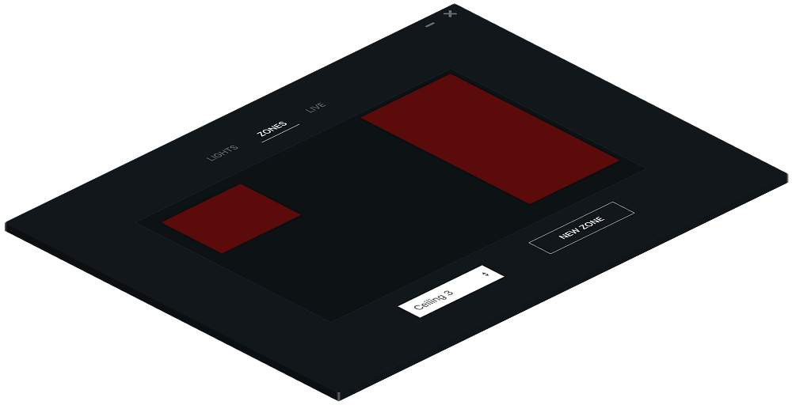
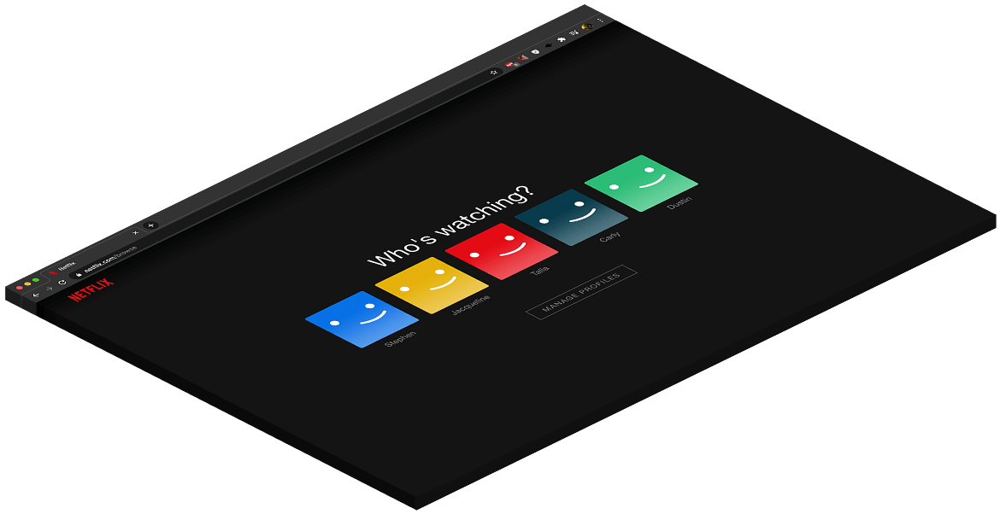
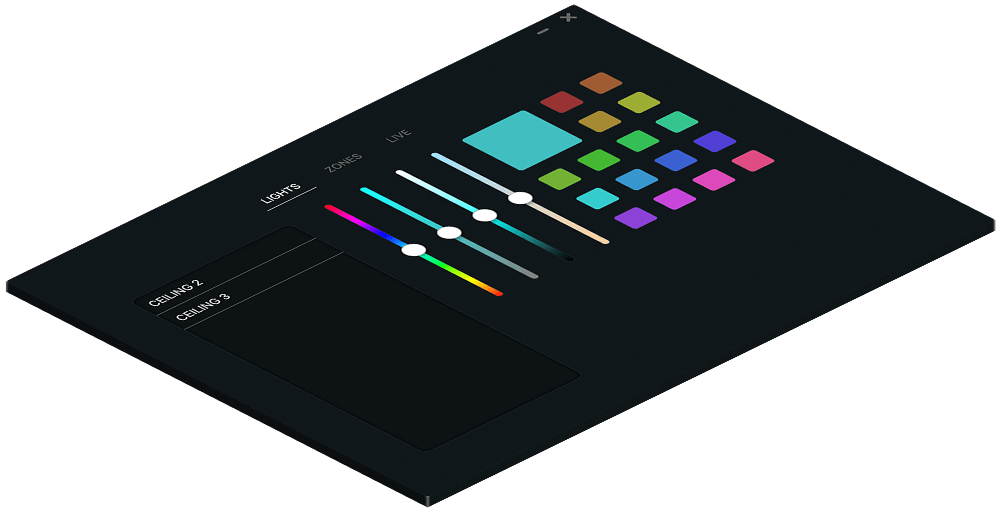
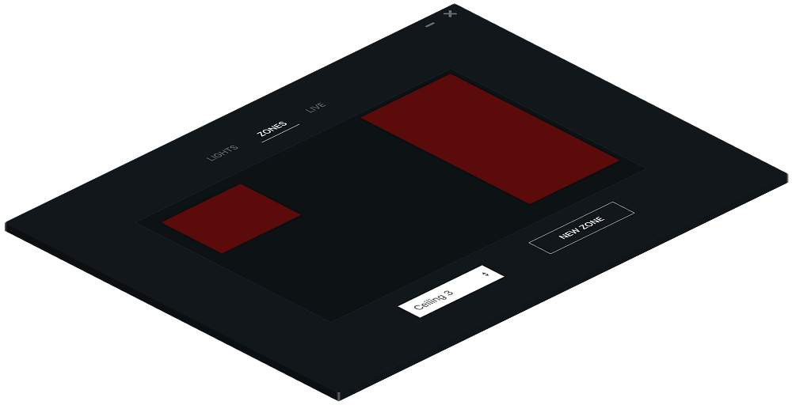

Luma dynamically adjusts the color of your LIFX lights to selected screen portions to provide the perfect viewing conditions for any situation, making for the perfect movie night, every time.



Ultimate Control, at your Fingertips.
Any Source. Luma analyzes your entire screen, meaning immersive lighting for any source, be it movies or games.
Zone Track. Select specific areas of your screen to calculate prominent colors and cast to any LIFX device.
Light Control. An easy to use, responsive dashboard to control any of your bulbs.

Built for LIFX.
LUMA is built with LIFX bulbs in mind, so all light connection is done for you. Just sit back and enjoy!
In the future, LUMA will be compatible with LIFX Z Strip, Phillips Hue lights, and other leading light companies.
 




